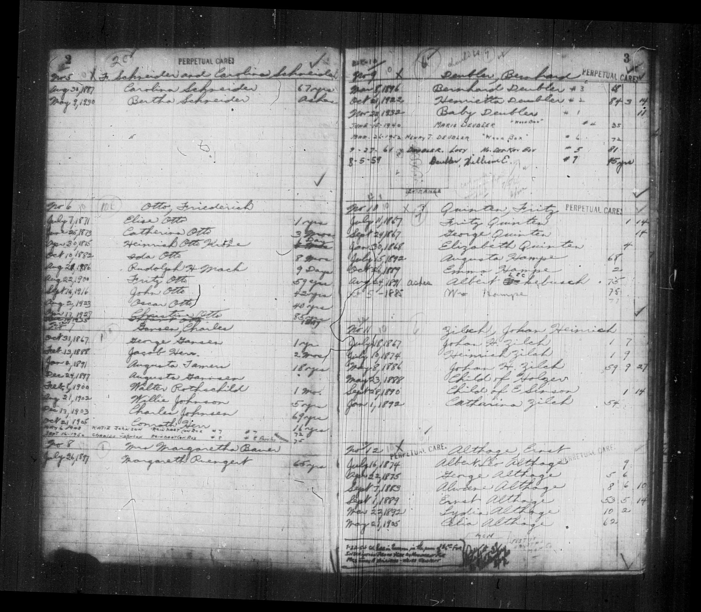

★ At a Glance
Old St. Marcus Cemetery (6638 Gravois Rd., now St. Marcus Commemorative Park) was the burial ground of the German Lutheran/Evangelical St. Marcus parish circle. It served not only the Gannsen family but a documentable cluster of figures from Charles's wider social world — including Jacob Reck, husband of Charles's 1868-baptism sponsor, who is buried just five years before Charles in the same consecrated south-side ground. The Charles–Jakob Reck pairing is the strongest physical evidence yet that Charles's parish-circle social bonds persisted from the 1860s baptism font to the 1900s graveyard.
★ Burial register source — the Gansen / Johnson family in Plot No. 7

{kind=link}
Old St. Marcus Cemetery perpetual-care burial register — page spread 2 / 3 (FamilySearch film 8198626, frame 00006). Left page: Schneider plot (No. 5), Otto plot (No. 6), and the Gansen / Johnson family plot (No. 7) with nine entries 1867–1948 (the family's ten interments span 1867–1950, the tenth being Charles Jr. in adjacent Plot No. 8). Right page: Deubler, Quinten, Zilch, and Althage plots. The "PERPETUAL CARES" stamp at the top of each column applies only to plots so designated; the Gansen / Johnson Plot No. 7 carries no perpetual-care notation alongside the family head's name. Use the zoom controls to enlarge for individual entry detail.
The ten Gansen / Johnson family entries — Plot No. 7 (1867 – 1948) + Plot No. 8 (1950)
Read off the parish register, the Gansen / Johnson family burials at Old St. Marcus span three generations across 83 years — from Charles & Auguste's firstborn in 1867 (six years before Charles's documented arrival in St. Louis) through Erwin Carl Konsen (Charles Jr.) in 1950. Nine of the ten interments are in Plot No. 7; the final 1950 entry — Charles Jr. himself — is in Plot No. 8 (Plot 7 having reached capacity by 1948). Ten distinct interments:
| Burial date | Name as recorded | Age at death | Project identification (where confirmed) |
|---|---|---|---|
| 31 Oct 1867 | George Gansen | 1 yr (~16 mos) | ★ Friedrich Wilhelm Gonnson (b. 20 Jun 1866 St. Louis, d. 31 Oct 1867 at 16 months) — Charles & Auguste's firstborn, the child Charles named for the deposed Elector Friedrich Wilhelm I of Hesse-Kassel three months after the 1866 Prussian annexation (Card 4 of Key Evidence: the symbolic-naming-as-identity argument). The cemetery register's "George Gansen" is the abbreviated form of his full given name (Georg Friedrich Wilhelm or similar). The death date — 31 October 1867 — establishes that he survived only 16 months. FamilySearch profile LB5X-RYC. Maria Josephine, Charles & Auguste's second child (b. 17 May 1868), arrived just six months after Friedrich Wilhelm's death. |
| 13 Feb 1888 | Jacob Herr | 2 mos | ★ Son of Maria Josephine, Charles & Auguste's second child (b. 1868), via her marriage into the Herr family. Jacob is therefore Charles's grandson — an infant who survived two months. FamilySearch profile GQXW-ZRD. The 1905 entry below (Conrath Herr, who survived to 16 years) is Maria Josephine's other documented son. |
| 2 Jan 1891 | Augusta Somers | 18 yrs | ★ Auguste Konzen-Somers, Charles & Auguste's fourth child (b. 4 Mar 1872, d. 31 Dec 1890 at 18). FamilySearch profile L5N2-M8Y. The maiden-name reading of "geb Konzen" (with z) on the same St. Marcus death register entry is the single American attestation of the full Hessian z-form — see Card 6 of Key Evidence. (An earlier transcription on this site read the surname as "Tamers" — corrected to "Somers" per a user re-read. A separate May 2026 re-examination reversed an interim Konzen → Konsen reading back to the canonical Konzen with z; see errata.) |
| 24 Dec 1897 | Augusta Gansen | (blank) | ★★ Auguste Kreichelt — CHARLES'S WIFE. Charles & Auguste married 7 January 1866 at St. Marcus (the 1866 register entry that gave the firstborn Friedrich Wilhelm his Elector's name three months later). The cemetery register's 1897 burial date is one year off from the 1896 St. Marcus death-register entry recording her as "Auguste Conson" with Charles as the surviving informant — likely a clerical year-error or a delayed-burial entry. FamilySearch profile LZKV-9F5. The Auguste Conson 1896 record is one of the strongest single Charles-self-attestations of the German surname (Card 1 of Key Evidence). |
| 6 Feb 1900 | Walter Rothschild | 1 mo | ★ Walter Rothschild, son of Bertha Johnson Rothschild — Charles & Auguste's seventh and youngest child (b. 25 Dec 1880, the 1881 St. Marcus baptism that recorded the surname as Jansen — Card 6 of Key Evidence). Bertha married into the Rothschild family; Walter was their infant son who survived one month. Charles's grandson. FamilySearch profile G7Z9-JP1. |
| 21 Aug 1902 | Willie Johnson | 5 yrs | ★ Willie Johnson — son of Charles Johnson Jr. (Erwin Carl Konsen, Charles & Auguste's sixth child) and Katherine "Kate" Misch. Willie therefore Charles Sr.'s grandson via Charles Jr.'s line. He survived to age 5. FamilySearch profile KGMG-VWW. |
| 17 Dec 1903 | Charles Johnsen | 69 yrs | ★ Charles himself — the project subject. Burial #3393 in the parish death register (the burial date here, 17 Dec, is two days after his death on 16 Dec 1903†; the actual interment was 19 Dec per other St. Marcus records). |
| 21 Oct 1905 | Conrath Herr | 16 yrs | ★ Son of Maria Josephine (Charles & Auguste's second child) via her marriage into the Herr family — older brother of the 1888 infant Jacob Herr. Conrath survived to age 16, then died in October 1905. Charles's grandson. FamilySearch profile LTSN-WKL. |
| 6 May 1948 | Katie Johnson "[Reinhart] on Box" | 72 yrs | ★ Katherine "Kate" Misch, wife of Erwin Carl Konsen (Charles Johnson Jr.) — born ~1876. Mother of the 1902 Willie Johnson above. The "on Box" notation suggests cremated remains in a box, not a casket burial. Buried in Plot 7 with the Gansen / Johnson family group. |
| 16 Sep 1950 | Charles Johnson "[Reinhart] on Box" | 75 yrs | ★ Erwin Carl Konsen / Charles Johnson Jr. (b. 27 Aug 1875, d. ~1950 at 75) — Charles & Auguste's sixth child and the one whose 1875 baptism — recorded as Konsen — is the closest American phonetic capture to the Hesse-parish Kontzen / Konzen cluster and the phonetic-s sibling of his sister Auguste's 1890 Konzen death record, the verbatim Hesse-parish form (Card 6 of Key Evidence). Same "on Box" cremation notation as Katie above. ★ BURIED IN PLOT 8 — not Plot 7. By 1950 the family Plot 7 was at capacity (with Katie's 1948 burial filling the last space), so Charles Jr.'s remains went to a separate adjacent plot. |
★ The ten entries are now fully identified. The plot holds three generations: Charles & Auguste themselves (Charles 1903, Auguste née Kreichelt 1897 register entry / 1896 death record), two of their children (firstborn Friedrich Wilhelm Gonnson 1867 at 16 months, Auguste-Somers 1890 at 18), three documented grandchildren via Maria Josephine and Bertha (Jacob Herr 1888 at 2 mos; Conrath Herr 1905 at 16 yrs; Walter Rothschild 1900 at 1 mo), Charles Jr.'s son Willie Johnson (1902 at 5 yrs), and Charles Jr.'s wife Katherine Misch (1948 at 72). Charles Jr. himself (1950) is in Plot 8 — Plot 7 had filled with Katie's 1948 burial, so Charles Jr.'s remains went to the adjacent acquired plot.
★ Why the Gansen / Johnson graves are NOT under perpetual care — and why they cannot be located today
The "PERPETUAL CARES" header stamped at the top of each column in the burial register identifies the plots that paid for ongoing maintenance. Plots so designated had a stamp placed alongside the family head's name. Look at the Otto family (Plot No. 6) on the same page — there is a numerical / stamp notation. Look at the Gansen / Johnson Plot No. 7: no such stamp appears next to "Gansen, Charles." The Gansen / Johnson family plot was never under perpetual care.
Per a May 2026 phone call to St. Marcus Cemetery (which now operates the New St. Marcus Cemetery, the successor parish burial ground): plots that WERE under perpetual care at Old St. Marcus had their remains moved to New St. Marcus Cemetery when the old ground was sold. Plots without perpetual care — like the Gansen / Johnson Plot No. 7 — were left in their original location. The cemetery records confirm: the Gansen / Johnson graves were not relocated.
Old St. Marcus Cemetery was sold to the city of St. Louis and converted into St. Marcus Commemorative Park (today's park at 6638 Gravois Rd.). The majority of the headstones were removed during the conversion. Without surviving headstones, and without a relocation record (which would have produced specific coordinates at New St. Marcus), there is no way to locate specifically where the Gansen / Johnson graves are within the original cemetery footprint. The parish register's "Plot No. 7" identifier is the closest reference we have — it places three generations of Charles's family somewhere within the park, but pinning the exact ground requires a 19th-century cemetery plot map detailed enough to convert "Plot No. 7" into modern coordinates, and no such map has yet been recovered.
This is a tragedy. Three generations of Charles Konzen's family — possibly including children predating his documented seven, his daughter Auguste (1890), Charles himself (1903), several grandchildren, and his son Erwin Carl Konsen / Charles Johnson Jr. and wife Katherine (1948 and 1950) — lie somewhere beneath St. Marcus Commemorative Park, with no markers, no relocation paperwork, and no surviving cemetery map detailed enough to identify the specific plot location. The parish register on this page is the last surviving record of where they are.
Confirmed parish-circle burials at Old St. Marcus
- Charles Gannsen · Burial #3393 · 19 Dec 1903
- Jakob Reck (1837-1898), Pfälzer-Reformed-then-Lutheran 1868-baptism sponsor's husband · Find a Grave #249141012 · funeral 31 May 1898
- Christine Goetz née Meier (1824-1883), Götz network · St. Marcus death entry #1394 · 14 Oct 1883
- Elisabeth Goetz née Langeloth (1829-1892) · St. Marcus entry #2215 · 4 Dec 1892
- Rosa Goetz née Meinhardt (1848-1897, b. Bad Dürkheim) · St. Marcus entry #2734 · 5 Dec 1897
- Wilhelmine Goetz née Becker (1819-1885) · St. Marcus entry #1472 · 13 Feb 1885
Why this matters — the Charles ↔ Jacob Reck pairing
The Charles–Jacob Reck pairing in particular is notable: two parish-circle figures, ~5 years apart, in the same plot of consecrated south-side ground. Although Jacob was baptized Reformed (Calvinist) at Freinsheim in 1837, by his 1898 death he had been integrated into the Lutheran/Evangelical St. Marcus parish community to which the Gannsens belonged. The Charles–Jacob bond formed in 1866-1868 (when Jakob & Josephine sponsored Charles's second-born child) and persisted to the cemetery thirty years later.
Note: most Old St. Marcus headstones were removed when the site became a city park, so Find a Grave is sparse for this cemetery; the parish burial register and obituary clippings (Westliche Post and St. Louis Post-Dispatch) are the better evidence base.
The Götz cluster — four women across 14 years
The four Goetz / Götz women buried at Old St. Marcus between 1883 and 1897 represent a parish-circle female-line network that intersects with Charles's own baptism sponsor list. Maria Agnes Götz sponsored Charles & Auguste's daughter Maria Josephine in 1868. The Goetz family also produced one of the four wedding witnesses at the 7 January 1866 Charles × Auguste marriage: Anna Goetz. Across two generations — sponsor 1866 → wedding witness 1866 → baptism sponsor 1868 → cemetery 1883-1897 — the Goetz family thread runs through nearly every formal moment of the Gannsen St. Louis life.
Cross-references
- → Maria Agnes Götz profile (1868 baptism sponsor)
- → Jacob Reck profile (1898 burial · 1868 sponsor) · → Josephine née von Delien profile (his first wife, individual ID open)
- → The Seven Children (sponsor lists for all seven baptisms)
- → Pension Mutual-Aid Network (the parish-circle network in pension-affidavit form)